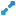

Summary Charts Tab
| Previous | Next | See Also |
The Summary Charts Tab provides a set of charts showing different representation of the data contained in the selected experiment in order to allow users to assess the quality of the experiment.
From top to bottom, you can see the following charts:
- Peak Intensity Distribution Charge - A histogram of ion intensity vs frequency for all MS2 spectra in the experiment.
- Precursor Ion Charge Distribution - Displays a bar chart of precursor ion charges.
- Average MS/MS spectrum - Displays the average MS/MS spectrum.
- Distribution of Precursor Ion Masses - Displays a frequency distribution of product ion m/z for different precursor ion charges.
- Number of Peptides Identified per Protein - Displays a bar chart with the number of peptides identified per protein.
- Number of Peaks per Spectrum - Displays a histogram of number of peaks per MS/MS spectrum.
- Delta m/z - Displays a relative frequency distribution of theoretical precursor ion mass - experimental precursor ion mass.
- Number of Missed Tryptic Cleavages - Displays the number of missed tryptic cleavages.
Thumbnails view
Clicking the button opens the chart's help document.
You can zoom-in every chart by clicking over it or pressing the  button.
If you select a region of the chart, the region will enlarged. To reset the action and auto-adjust the chart in the area, you must click on button.
Single chart view
With and buttons you can watch the previous and next charts correspondingly.
Pressing the  button returns to
the general view showing all thumbnails.
button returns to
the general view showing all thumbnails.
If you select a region of the chart, the region will be enlarged. To reset the action and auto-adjust the chart in the area, you must click on button.
Pressing the  button opens the chart's
help document.
button opens the chart's
help document.
If the button is enabled it opens the options panel where you can adjust the graph.
If the button is enabled it shows an additional legend.